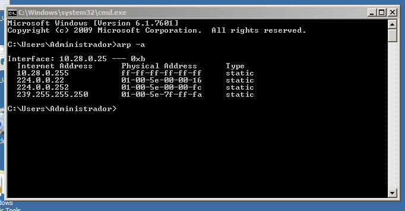
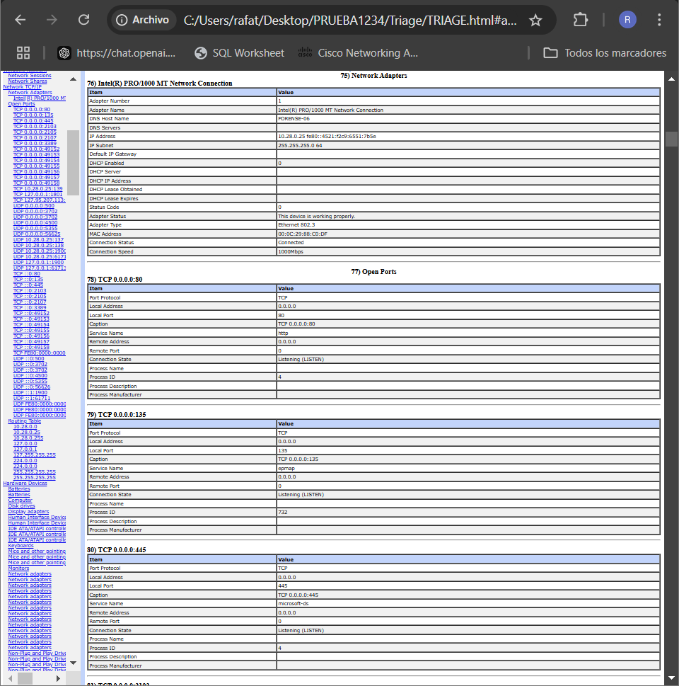
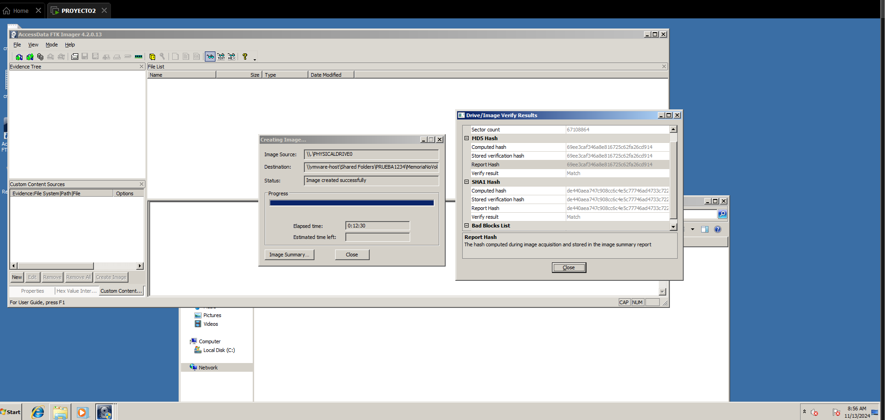

Este informe presenta un análisis detallado de la adquisición forense realizada sobre una máquina virtual comprometida, simulando un incidente de ciberseguridad. El objetivo de este ejercicio es documentar paso a paso el proceso de recolección y almacenamiento de evidencia digital, aplicando las mejores prácticas en investigación forense y asegurando la integridad de las evidencias recolectadas.
A continuación, se detallan las fases de recolección y almacenamiento de evidencia, junto con el análisis técnico de los hallazgos derivados del proceso.
Recolección y Almacenamiento de Evidencias
La recolección de evidencia digital en un entorno de máquina virtual comprometida se ha realizado según la metodología estándar de nuestra empresa, que asegura la integridad y validez de la información capturada.
Contamos con la autorización previa de los responsables para acceder y manipular la máquina virtual.
Seguimos el orden de volatilidad según la norma ISO/IEC 27037.
Para dar inicio al proceso de adquisición forense, se procedió a la documentación exhaustiva de los detalles básicos y la configuración de la máquina virtual comprometida.
Registro de fecha y hora
Fecha de documentación inicial: 12/11/2024
Hora de documentación inicial: 12:19
Este registro se realizó siguiendo la normativa de sincronización de tiempo para garantizar la precisión en el cronograma del incidente.
Ubicación de la Máquina Virtual en el Entorno Virtual
Entorno virtual: VMware.
Ubicación de la Máquina Virtual: La máquina en cuestión está virtualizada en mi dispositivo personal.
Propiedades y Configuración de la Máquina Virtual
A continuación, se documentan las propiedades esenciales de la VM comprometida, lo cual será útil para comprender sus características operativas y el contexto de la intrusión.
Para realizar una adquisición forense adecuada de la máquina virtual comprometida, se han identificado y clasificado las evidencias digitales siguiendo la jerarquía de volatilidad. Esto permite recolectar primero los datos más volátiles, asegurando su preservación antes de que puedan ser alterados o eliminados.
Memoria Volátil
Para empezar capturaremos la memoria RAM con la herramienta FTK Imager, volcaremos la memoria RAM al completo.
Captura de Memoria RAM
Detalles de la evidencia:
Ruta de la evidencia: Ubicación física: Módulo de memoria RAM insertado en la placa base. Ruta del sistema: RAM.
Hash no alterado: Algoritmo utilizado: SHA1 y MD5. Valor hash: SHA1.- 98054950586f3f281d050615377ce30b44ecda63, MD5.- 64c9223ad659dda58e1b1115161c4cca
Mtime (Tiempo de modificación): Fecha: 12/11/2024 Hora: 12:59:23
Descripción breve de la evidencia: Módulo de memoria RAM de tipo DDR4, con capacidad de 1GB, utilizado para el almacenamiento temporal de datos en el sistema investigado.
ACTA DE ADQUISICIÓN FORENSE
Número de caso: 001
Fecha: 12/11/2024
Hora de inicio: 12:19
Lugar: San Fernando (Cádiz)
Investigador responsable: Rafael Tocino Batista
Método de adquisición: Herramienta utilizada: AccessData_FTK_Imager_4.2.0. Tipo de adquisición: Memoria RAM completa.
Detalles de la evidencia adquirida: Nombre del archivo de imagen: memdump.mem. Tamaño del archivo: 1.073.741.824 bytes. Hash de la evidencia: SHA1.- 98054950586f3f281d050615377ce30b44ecda63, MD5.- 64c9223ad659dda58e1b1115161c4cca
Firmas:
[Firma del perito]
[Firma del testigo]
Captura de Cachés Específicos
Tabla de Enrutamiento
Para identificar la tabla de enrutamiento hemos emitido el comando "route print" y lo hemos almacenado en un archivo .txt al cual posteriormente se le ha calculado el hash “SHA1 y MD5” para mantener la integridad.
Tabla de Enrutamiento
Detalles de la evidencia:
Ruta de la evidencia: Ubicación física: RAM. Ruta del sistema: Tabla de enrutamiento, RAM.
Hash no alterado: Algoritmo utilizado: SHA1 y MD5. Valor hash: SHA1.- 65d2bacc33701f9368f3ab50cc3775531117aecc, MD5.- c1a67a1e6d6f000675e6986700038c01
Mtime (Tiempo de modificación): Fecha: 12/11/2024 Hora: 13:06:00
Descripción breve de la evidencia: La evidencia corresponde a la tabla de enrutamiento activa del sistema, almacenada temporalmente en la memoria RAM.
ACTA DE ADQUISICIÓN FORENSE
Número de caso: 001
Fecha: 12/11/2024
Hora de inicio: 13:06:00
Lugar: San Fernando (Cádiz)
Investigador responsable: Rafael Tocino Batista
Método de adquisición:
Herramienta utilizada: CMD
Tipo de adquisición: Tabla de enrutamiento activa completa
Detalles de la evidencia adquirida:
Nombre del archivo de imagen: TablaEnrutamiento.txt
Tamaño del archivo: 512 bytes
Hash de la evidencia:
SHA1: 65d2bacc33701f9368f3ab50cc3775531117aecc
MD5: c1a67a1e6d6f000675e6986700038c01
Firmas:
[Firma del perito]
[Firma del testigo]
Caché ARP
En el caso del caché ARP hemos ejecutado el comando arp -a y este resultado lo hemos almacenado en un archivo .txt al cual posteriormente se le ha calculado el hash “SHA1 y MD5” para mantener la integridad.

Caché ARP
Detalles de la evidencia:
Ruta de la evidencia: Ubicación física: RAM. Ruta del sistema: tabla ARP, RAM.
Hash no alterado: Algoritmo utilizado: SHA1 y MD5. Valor hash: SHA1.- 13d1cdb410f43b74155514e2bda4146ade5ae432, MD5.- 4364c5630e812df3bb2966000d2d02d2
Mtime (Tiempo de modificación): Fecha: 12/11/2024, Hora: 13:12:18
Descripción breve de la evidencia: La tabla ARP (Address Resolution Protocol) es una estructura temporal en la memoria RAM que almacena asociaciones entre direcciones IP y direcciones MAC (Media Access Control) de dispositivos en la red local.
ACTA DE ADQUISICIÓN FORENSE
Número de caso: 001
Fecha: 12/11/2024
Hora de inicio: 13:12:18
Lugar: San Fernando (Cádiz)
Investigador responsable: Rafael Tocino Batista
Método de adquisición:
Herramienta utilizada: CMD
Tipo de adquisición: Tabla ARP activa completa
Detalles de la evidencia adquirida:
Nombre del archivo de imagen: ARP
Tamaño del archivo: 462 bytes
Hash de la evidencia:
SHA1: 13d1cdb410f43b74155514e2bda4146ade5ae432
MD5: 4364c5630e812df3bb2966000d2d02d2
Firmas:
[Firma del perito]
[Firma del testigo]
Triage del Sistema
El triage inicial del sistema es una fase crítica en el análisis forense, ya que permite identificar rápidamente los elementos de interés que podrían contener información relevante para el caso antes de realizar una adquisición completa.
Este triage inicial se ha realizado con WinAudit e IRTriage-Master en el cual se realizó un análisis detallado de los procesos activos en el sistema en el momento de la adquisición. Los procesos con nombres inusuales, ubicaciones desconocidas o en rutas sospechosas fueron marcados para un análisis más profundo.
WinAuditIRTriage-Master
También se revisaron las conexiones de red activas para identificar cualquier comunicación externa que pudiera comprometer la integridad del sistema o relacionarse con actividad malintencionada.

Conexiones de Red
La exploración de archivos recientes y modificados fue otra técnica clave en el triage inicial. Se identificaron archivos abiertos recientemente por el usuario o por aplicaciones del sistema en las siguientes ubicaciones:
Documentos de usuario en la carpeta documentos.
Archivos de sistema de Windows, la carpeta System32.
Directorios temporales y de caché.
Detalles de la evidencia:
Ruta de la evidencia: Ubicación física: RAM. Ruta del sistema: Procesos, tabla ARP.
Hash no alterado: Algoritmo utilizado: SHA1 y MD5. Valor hash: SHA1.- 412e360319c6591f590f65906e06655059d45172, MD5.- 875594efe45e02b15df364016092bc0c
Mtime (Tiempo de modificación): Fecha: 13/11/2024, Hora: 8:33:33
Descripción breve de la evidencia: El triage de procesos es el proceso de priorizar y clasificar los procesos en ejecución para identificar rápidamente aquellos que podrían ser sospechosos o maliciosos, utilizado en análisis forenses y diagnósticos. Por otro lado, la tabla ARP almacena las asociaciones entre direcciones IP y MAC de dispositivos en la misma red local, facilitando la resolución de direcciones para la comunicación eficiente entre dispositivos en redes Ethernet.
ACTA DE ADQUISICIÓN FORENSE
Número de caso: 001
Fecha: 12/11/2024
Hora de inicio: 13:12:18
Lugar: San Fernando (Cádiz)
Investigador responsable: Rafael Tocino Batista
Método de adquisición:
Herramienta(s) utilizada(s): WinAudit e IRTriage-Master
Tipo de adquisición: Triage de los procesos y la tabla ARP
Detalles de la evidencia adquirida:
Nombre del archivo de imagen: TRIAGE
Tamaño del archivo: 860.160 bytes
Hash de la evidencia:
SHA1: 412e360319c6591f590f65906e06655059d45172
MD5: 875594efe45e02b15df364016092bc0c
Firmas:
[Firma del perito]
[Firma del testigo]
Memoria no volátil
La adquisición de la memoria no volátil en el sistema incluyó la creación de una imagen forense completa del disco duro para asegurar una copia exacta y verificable de todos los datos almacenados. El proceso de creación de esta imagen se realizó utilizando FTK Imager, siguiendo estándares de preservación y custodia de evidencias digitales.
Para la adquisición del disco, se seleccionó el formato de imagen E01.
Se generaron hashes MD5 y SHA-1 tanto al inicio como al final de la adquisición, para verificar la integridad y autenticidad de la imagen forense creada. Estos hashes fueron documentados y posteriormente verificados para asegurar que la imagen es una copia fiel del disco original.
La adquisición se realizó en un entorno controlado, donde el disco duro fue conectado a una estación de trabajo forense utilizando un bloqueador de escritura.
Al concluir el proceso de adquisición, FTK Imager generó los hashes MD5 y SHA-1 de la imagen final, los cuales fueron comparados con los generados al inicio del proceso para confirmar la integridad de la imagen.

Disco duro del sistema
Detalles de la evidencia:
Ruta de la evidencia: Ubicación física: Disco duro del sistema. Ruta del sistema: (C:)
Hash no alterado: Algoritmo utilizado: SHA1 y MD5. Valor hash: SHA1.- de440aea747c908cc6c4e5c77746ad4733c72208, MD5.- 69ee3caf346a8e816725c62fa26cd914
Mtime (Tiempo de modificación): Fecha: 13/11/2024, Hora: 20:44:19
Descripción breve de la evidencia: El disco duro de 30 GB del sistema contiene el sistema operativo, aplicaciones instaladas, archivos del usuario y registros del sistema.
En este informe, se ha detallado el proceso de adquisición forense de una máquina virtual comprometida, siguiendo las mejores prácticas y metodologías estándar en la investigación de incidentes de ciberseguridad. A través de la aplicación de la jerarquía de volatilidad, se logró garantizar la preservación e integridad de las evidencias más críticas, comenzando por la memoria volátil y avanzando hacia la captura de datos no volátiles, como la imagen del disco duro.
La utilización de herramientas como FTK Imager y WinAudit permitió una documentación meticulosa de cada paso, asegurando la trazabilidad y autenticidad de las evidencias. El análisis forense realizado ha establecido una base sólida para futuras investigaciones y posibles acciones legales, demostrando la eficacia del proceso de adquisición y análisis en la resolución de incidentes de seguridad digital.
Repositorio de Evidencias
Para más detalles y acceso a todas las evidencias adquiridas en este proceso forense, se puede consultar el repositorio a continuación:
Este repositorio contiene todos los archivos relacionados con la investigación forense, incluyendo imágenes de la memoria, la tabla de enrutamiento y caché ARP.